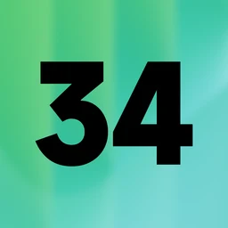

ByRUDAN OOOInterface
更新内容
01
聚焦搜索
02
快捷添加
03
网络滚动更新
04
体验优化

OOOInterface 34
点击下载
版本信息
版本号：
OOOInterface 34
发布日期：
2026年11月22日
许可证：
ABCD-26W08A
系统要求
浏览器：
Chromium 内核浏览器
存储空间：
至少 20MB 可用空间
网络环境：
能够连通全球互联网
5.3:34
版本更新
新增功能
新增全新聚焦搜索功能
新增全新快捷添加快速访问链接功能
新增全新网络滚动更新功能
体验优化
优化壁纸模式进退体验
修复了一些已知问题
返回首页
历史版本